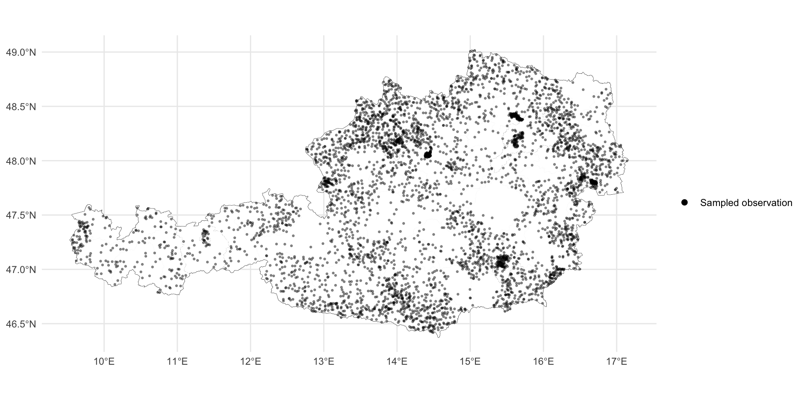
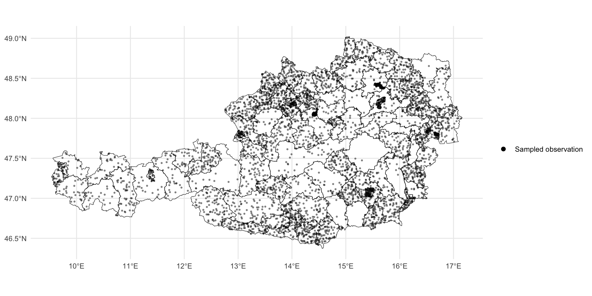

Mapping the Unseen
A practical guide to Small Area Estimation
CUPUM 2025
Introduction
- Research Fellow in Urban Analytics at the Centre for Advanced Spatial Analysis at UCL.
- My background is in Geospatial Data Science.
- My PhD focuses on using survey data for better understanding mobility and accessibility inequalities.
About TRACK-UK
This workshop is part of a wider project we are working at at UCL, together with Arup and the Alan Turing Institute.
The project is called TRACK-UK, and funded by the EPSRC.
The project was inspired by the fact that there we usually have limited understanding of what happens at small area level in terms of mobility, travel emissions, energy use, or housing quality.
There is a wide range of existing surveys (NTS, English Housing Survey), but they are usually designed to be used at regional or national scale. It is not easy to use this data to produce neighbourhood or small area estimates (OA, MSOA, LSOA).
As part of the project, we have had to learn about these methods, so we take this workshop as an opportunity to share what we have learnt with the urban analytics community.
Show life expectancy example


About this workshop
About this workshop
The workshop is structured in two parts:
Theoretical presentation: We will learn about small area estimation methods from a theoretical perspective, providing an intuitive overview on these methods (13:00 - 13:45)
Practical: Hands-on session in
Rwhere we will see how to apply all these concepts to real data (14:00 - 14:45)
Expected takeaways
- Understand what Small Area Estimation is and why it can be useful in the context of Urban Analytics.
- Get familiar with the main types of SAE methods – direct estimators, area-level models, unit-level models, and how they differ in terms of data and complexity.
- Learn how model-based methods can help us improve our estimates by incorporating auxiliary information.
- Gain hands-on experience in
Rapplying these methods to real data.
Small Area Estimation Overview
Small Area Estimation Overview
Small Area Estimation (SAE) is a statistical methodology that allows us to improve the precision of our estimates when we work with survey data for which sample sizes are limited or even zero.
Small Area Estimation Overview
Small Area Estimation Overview
Small Area Estimation Overview
Context: When we work with survey data, we usually want to better understand a phenomena (travel behaviour, time-use patterns). Often, to do so, we need to aggregate the data to a specific spatial resolution.
Issue: However, the way in which survey data is collected sometimes leads to too small sample sizes (or even zero) to produce reliable enough estimates.
Small Area Estimation Overview
SAE methods help us solve this issue by using models that include additional information (auxiliary data) in the form of covariates. This models better explain the variation in our data, and produce more reliable estimates.
SAE methods
SAE methods overview
Today we will talk about the three main small area estimation methodologies: direct estimators, area-level models, and unit-level models.
We can think of them as increasingly complex methods that will help us improving our estimates.
As complexity increases, our estimates become more accurate. However, this also means that the data and computational requirements of the models also increase.
SAE methods overview

SAE methods overview

Direct estimation methods
Example scenario
- You have access to an already collected survey on income.
- Survey data will have documentation attached on how the survey was conducted.
- You observe sampled individuals’ income, and you know their residential location.
- And you want to generate small area estimates based on this survey.
- However, perhaps for some areas, you have very small sample sizes or even no observation.
Direct estimation methods
- They are the simplest small area estimation methods.
- Intuitively, the direct estimator calculates the mean of the survey variable of interest for each area.
- In SAE, this mathematical formulation is known as the Horvitz-Thompson estimator.
\[ \hat{\bar{Y}_d} = \frac{1}{N_d} \sum_{i \in s_d} {w_{di}} Y_{di} \]
where \(\hat{\bar{Y}_d}\) is our estimate for area \(d\); \(N_d\) is the total population of domain \(d\), \(Y_{di}\) is the observed value for individual \(i\) in domain \(d\); and \(w_{di}\) is the sampling weight of observation \(i\) in domain \(d\).
A quick note on survey sampling
When a survey is run, the survey design ensures that it is as representative as possible of the full population –i.e. all groups in the population are included in the survey, in a proportion that follows that of the total population.
There is usually documentation accompanying the survey data explaining the details on how the survey sampling was done.
As a result, survey data often comes with sampling weights, which represent the probability of each observation included in the sample.
Additionally, the survey can contain more sophisticated attributes, that account for different subgroups within the population –this is known as stratification– or account for sampling with or without replacement.
A quick note on survey sampling

Direct methods: Advantages and limitations
Advantages
- The direct estimation method works well when the sample has good coverage across all areas you are interested in.
- It does not rely on external data, as it only uses observed data from the survey.
- It is intuitive, and easy to interpret.
Limitations
- Unreliable for areas where you have small samples – estimates can be very “noisy” (it is not very precise).
- Not available for an area of interest for which we have no respondents.
Model-based estimation methods
Model-based estimation methods
Direct methods are only reliable under large enough samples. However, this is not usually the case when we work with real survey data and small areas.
Furthermore, we usually have access to additional sources of information, not just survey data –e.g. census data, administrative data– which can tell us more about the target variable.
We can therefore take advantage of this extra information and improve our estimates by “borrowing strength” from these other sources.
This is what model-based methods allow us to do in SAE.
Model-based estimation methods
The type of data we incorporate into our analysis will determine the type of model-based estimation method we will use.
Model-based methods are divided into area-level models, and unit-level models:
- Area-level models use aggregated auxiliary data at domain level (e.g. average house prices, age distribution)
- Unit-level models also include individual (unit)-level data from surveys (e.g. paid rent, individual age).
- Additionally, both area-level and unit-level models can include spatial data to account for the potential spatial autocorrelation of the variable of interest, or temporal data.
Area-level models
Area-level models only use covariates at domain level.
Formally, they are estimated in two steps using what is known as the Fay-Herriot model:
First, the we calculate the direct estimator (the same one we learnt about earlier):
\[ \hat{\theta}_d^{DIR} = \theta_d + \epsilon_d \]
where \(\hat{\theta}_d^{DIR}\) is the direct estimate for area \(d\),formed by the true value \(\theta_d\) plus the sampling error \(\epsilon_d\), which reflects the uncertainty of the estimator.
Next, the true values of the variable \(\theta_d\) are modelled using area-level covariates:
\[ \theta_d = \mathbf{x}_d^T \boldsymbol{\beta} + u_d, \quad u_d \sim_{\text{ind}} N(0, \sigma_u^2), \quad d = 1, \ldots, M \]
where \(\mathbf{x}_d^T\) are the covariates for area \(d\), with their respective \(\beta\) coefficients (the fixed effects), and \(u_d\) is the area-level random effect, capturing the unexplained differences between areas.
Spatial area-level models
The basic Fay-Herriot model assumes that the area-level random effects (\(u_d\)) are “independent and identically distributed”. This means that what happens to one area does not affect the others.
However, in reality we observe that there are variables that are very affected by space, and not considering their spatial component would be neglecting a very important element in the model.
We can therefore include space in our models by adding a spatial effect. This will ensure that our model understands that areas that are closer will have estimates that are more similar than those of areas further away.
Area-level models: Advantages and limitations
- The main advantage of using an area-level model is that we increase the precision of our estimates by adding auxiliary information at area level.
- Additionally, this allows us to obtain predictions for out-of-sample domains.
- These models require access to area-level data, and are not as straightforward as direct methods.
Unit-level models
Unit-level models
Unit-level models are the most complex type of SAE method we will talk about today.
Additionally to area-level auxiliary information, unit-level models also include auxiliary data at the unit level.
These models assume that unit-specific auxiliary data is available for each population element \(j\) in each area \(i\).
They allow for producing more precise estimates than direct estimators and area-level models.
Similarly to area-level models, unit-level models also produce estimates for out-of-sample domains (assuming we have access to unit-level auxiliary data).
Unit-level models
- The most basic unit-level models are known as nested error or Battese, Harter, and Fuller models, because they include both area-level and unit-level random effects:
\[ y_{di} = \mathbf{x}_{di}^T \beta + u_d + \epsilon_{di} , \quad u_d \sim_{\text{ind}} N(0, \sigma_u^2), \quad \epsilon_{di} \sim_{\text{ind}} N(0, \sigma_\epsilon^2) \]
- where \(y_{di}\) is the unit-level outcome for individual \(i\) in area \(d\),
- \(\mathbf{x}_{di}^T \beta\) represents the individual-level covariates and their coefficients,
- \(u_d\) is the area-level random effect, and
- \(\epsilon_{di}\) is the unit-level error term, capturing individual variability within each area.
Unit-level models: Advantages and limitations
Advantages
Unit-level models are the most precise out of the SAE methods we have learnt about today, assuming data is available.
Unit-level models constitue a “bottom-up” approach to SAE –they use the most granular available data (unit-level).
They are very flexible, since they allow for aggregation at any desired geographical level.
Limitations
They require access to both unit-level covariates and population-level auxiliary data, which may not always be available.
Estimation is more complex and computationally demanding than area-level models, especially when working with large populations.
Summary and key takeaways
Summary and key takeaways
Small Area Estimation helps us produce reliable estimates in areas where survey data is sparse or missing.
We explored three SAE approaches:
- Direct estimators: straightforward, but unreliable for small samples.
- Area-level models: use domain-level covariates to improve estimates.
- Unit-level models: use individual-level data for even more precision.
Model-based methods “borrow strenght” from auxiliary information (e.g. census data, spatial data), allowing us to reduce noise and fill data gaps.
Spatial models can improve accuracy furhter by accounting for the spatial autocorrelation of the data.
QR code for practical